这一讲把 NumPy 从“会操作数组”推进到“能完成一轮科学分析”。主线是：先用向量化完成数值计算，再用描述统计理解分布，用协方差和相关系数理解变量关系，随后进入时间序列指标、线性代数、随机模拟和假设检验。示例会在需要时结合 Pandas、Matplotlib、SciPy 与 scikit-learn。
统计量必须和问题背景一起解释。一个均值、相关系数或 P 值本身不是结论，更不能替代数据质量检查和业务判断。
一、从描述到推断：统计分析地图
统计学研究如何收集、处理、分析、解释和呈现数据，通常分成两条主线：
| 分支 | 回答的问题 | 常见工具 |
|---|---|---|
| 描述统计 | 这批数据长什么样？中心、波动、分布形状如何？ | 均值、中位数、众数、方差、分位数、偏度、峰度、图表 |
| 推断统计 | 能否从样本推断总体？观察到的差异是否可能只是抽样波动？ | 点估计、区间估计、假设检验、回归 |
还要先分清四组概念：
- 总体与样本：总体是全部研究对象，样本是从总体中抽取的一部分；
- 参数与统计量：参数描述总体，统计量由样本计算并用于估计参数；
- 点估计与区间估计：前者给出单个估计值，后者给出带置信水平的范围；
- 相关与回归：相关度量线性关系的方向和强度，回归进一步建立解释或预测模型；相关不等于因果。
Python 的统计分析工具链各有分工：NumPy 负责数组与基础统计，Pandas 负责表格和时序数据，SciPy 提供概率分布与统计检验，Statsmodels 偏重可解释统计模型，scikit-learn 偏重预测建模，Matplotlib/Seaborn 负责可视化；超大规模数据可转向 PySpark 等分布式框架。
二、向量化数学与条件逻辑
1. 通用函数与批量运算
NumPy 的通用函数（ufunc）把同一运算应用到整个数组，避免 Python 层循环。除四则运算和幂运算外，还应熟悉：
import numpy as np x = np.array([-2.0, -1.0, 0.0, 1.0, 2.0]) np.abs(x) # 绝对值 np.sqrt(x[x >= 0]) # 平方根：先筛掉负数 np.exp(x) # e 的幂 np.log1p(np.abs(x)) # log(1+x)，小 x 时比 log(1+x) 更稳定 np.sin(x) # 三角函数 np.maximum(x, 0) # 与标量逐元素取较大值 np.clip(x, -1, 1) # 截断到指定区间
聚合函数会把一批数据压缩为统计量；通过 axis 指定沿哪个轴聚合，通过 keepdims=True 保留被聚合的轴，便于后续广播：
scores = np.array([[80, 92, 75], [88, 85, 91], [70, 79, 84]]) scores.mean(axis=0) # 每一科的均值 scores.mean(axis=1) # 每个学生的均值 center = scores.mean(axis=0, keepdims=True) centered = scores - center # 借助广播完成按列中心化
2. 条件选择不写循环
revenue = np.array([120, 280, 90, 450, 310]) # 两分支：满足条件取第二个参数，否则取第三个参数 level = np.where(revenue >= 300, "高", "普通") # 多分支：按顺序匹配，第一个为 True 的条件生效 level3 = np.select( [revenue >= 300, revenue >= 150], ["高", "中"], default="低", ) # 复合条件必须逐项比较并用 & / | / ~；每个条件加括号 selected = revenue[(revenue >= 100) & (revenue < 400)]
向量化通常更快也更短，但中间数组也会占内存。处理超大数组时要关注 dtype、切片视图、分块计算与原地操作，不能只看运行时间。
三、描述统计：中心、离散与分布形状
1. 中心趋势：均值、中位数、众数
均值为 $\bar{x}=\frac{1}{n}\sum_{i=1}^{n}x_i$，适合概括相对对称且没有强异常值的数据；中位数是排序后的中间位置，对极端值更稳健；众数是出现最频繁的值，可能不存在，也可能有多个，尤其适合类别数据。
import numpy as np from scipy import stats values = np.array([75, 82, 90, 65, 88, 78, 94, 70]) mean = values.mean() median = np.median(values) modes = stats.mode(values, keepdims=False) # 连续数据通常不适合机械求众数
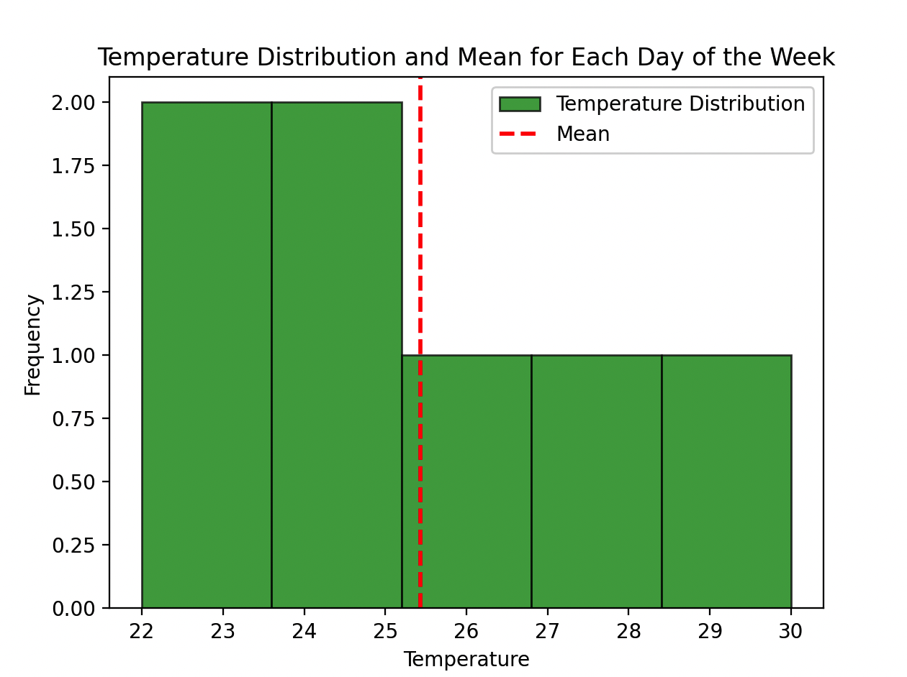
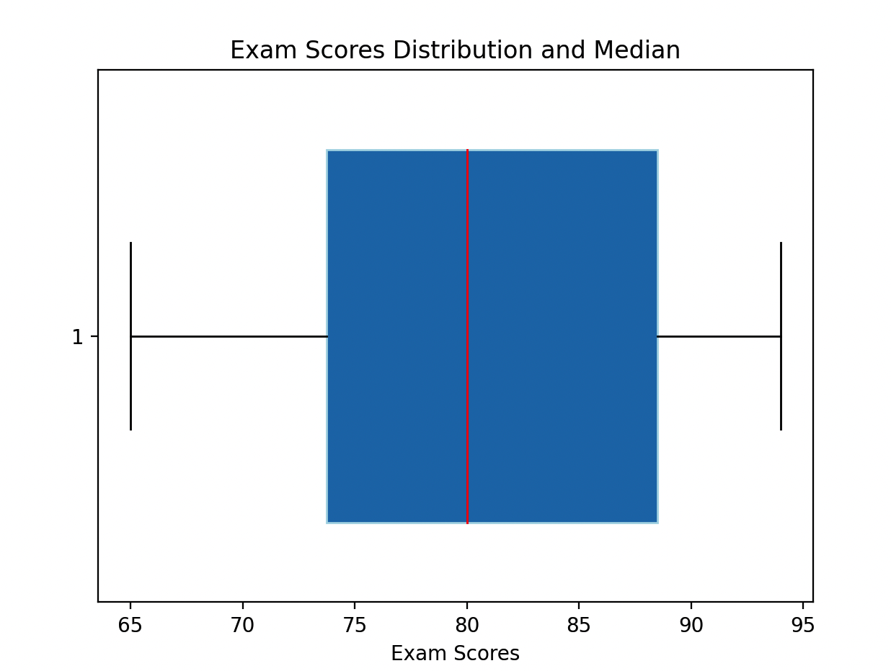
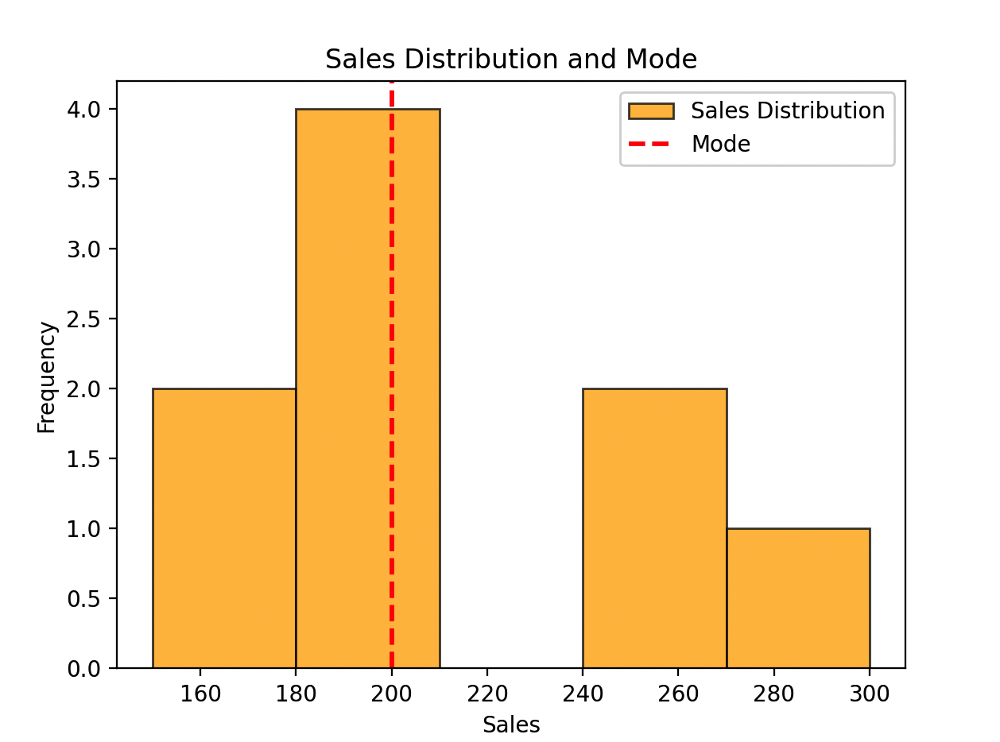
2. 离散程度：极差、方差与标准差
方差度量数据相对均值的平方偏离：
$$ \sigma^2=\frac{1}{N}\sum_{i=1}^{N}(x_i-\mu)^2,\qquad s^2=\frac{1}{n-1}\sum_{i=1}^{n}(x_i-\bar{x})^2 $$
总体方差使用分母 $N$，样本方差常用贝塞尔校正后的 $n-1$。NumPy 通过 ddof 控制：ddof=0 是总体口径，ddof=1 是常见样本口径。标准差是方差的平方根，单位与原变量一致，因此更直观；二者都对极端值敏感。
spread = { "range": np.ptp(values), # max - min "population_var": np.var(values), "sample_var": np.var(values, ddof=1), "population_std": np.std(values), "sample_std": np.std(values, ddof=1), }
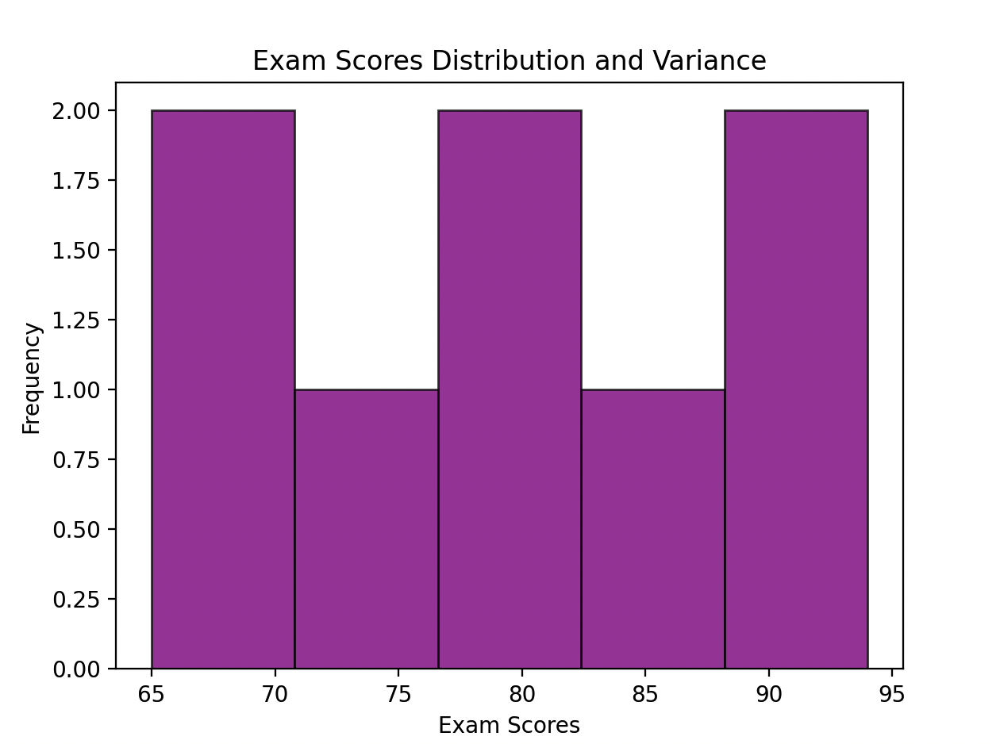
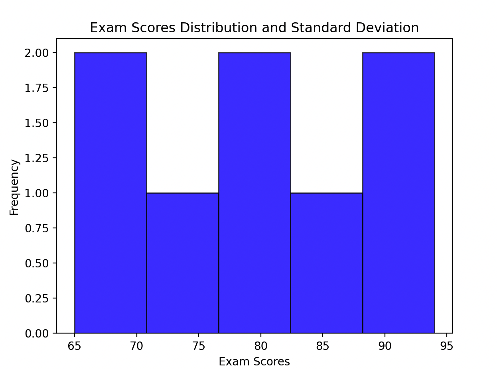
3. 分位数与箱线图
分位数用位置描述分布。$Q_1$、$Q_2$、$Q_3$ 分别是 25%、50%、75% 分位数，四分位距 $IQR=Q_3-Q_1$。常见的离群值经验规则是低于 $Q_1-1.5IQR$ 或高于 $Q_3+1.5IQR$；它是筛查规则，不是自动删除依据。
q1, median, q3 = np.quantile(values, [0.25, 0.5, 0.75]) iqr = q3 - q1 lower, upper = q1 - 1.5 * iqr, q3 + 1.5 * iqr outliers = values[(values < lower) | (values > upper)]
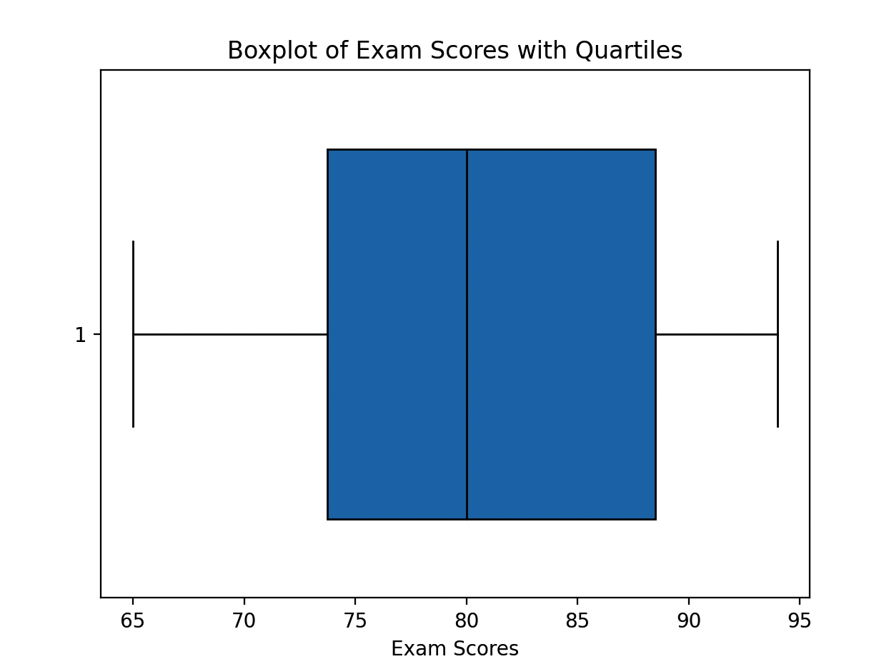
4. 偏度与峰度
偏度描述分布的不对称程度：右侧长尾通常为正偏，左侧长尾通常为负偏。正偏分布中均值常被右尾拉高，因而常见 均值 > 中位数；这只是经验现象，不是判定定理。
峰度描述尾部厚度和极端值倾向。必须说明口径：Pearson 峰度中正态分布为 3；Fisher 超额峰度中正态分布为 0。
income = np.array([3500, 4200, 4500, 5000, 5200, 6000, 8000, 12000, 16000]) skewness = stats.skew(income, bias=False) pearson_kurtosis = stats.kurtosis(income, fisher=False, bias=False) excess_kurtosis = stats.kurtosis(income, fisher=True, bias=False)
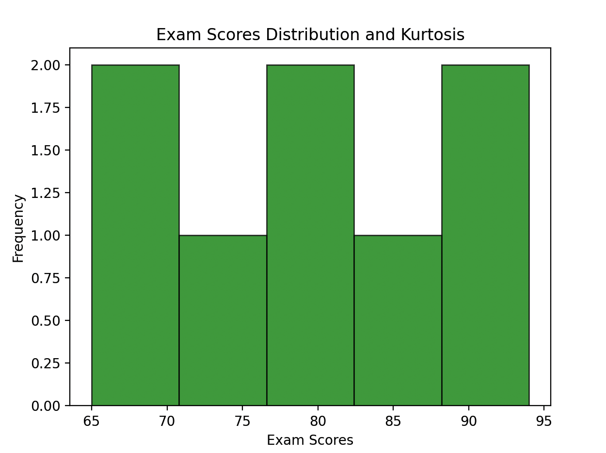
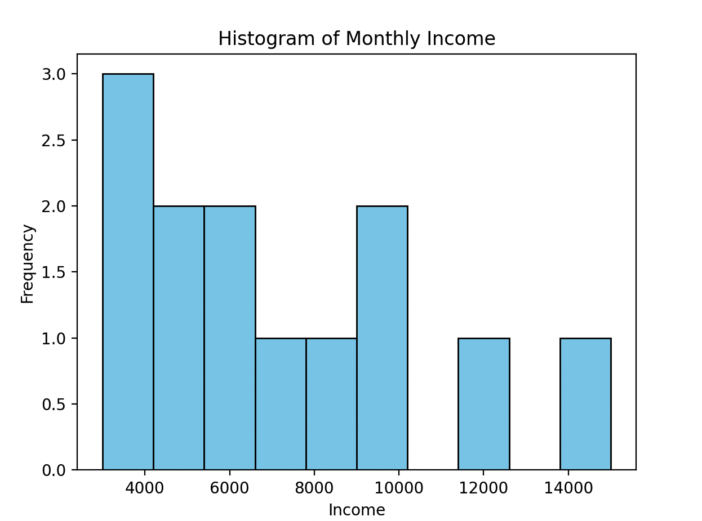
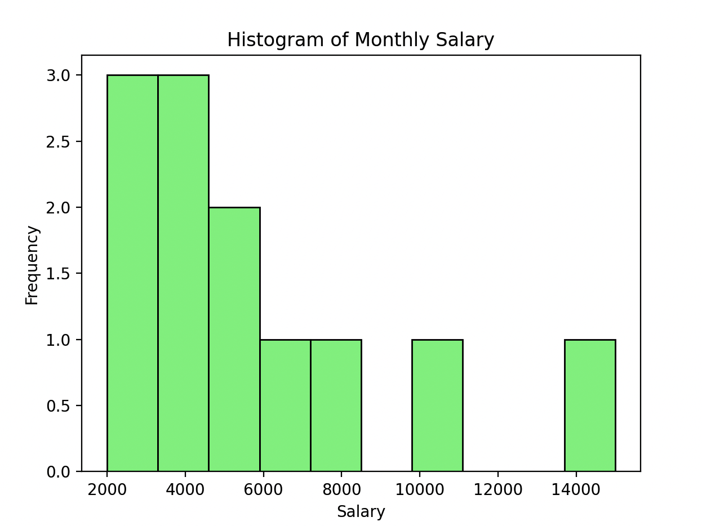
5. 一次完成描述性分析
summary = { "count": values.size, "mean": values.mean(), "median": np.median(values), "std_sample": values.std(ddof=1), "min": values.min(), "q1": np.quantile(values, 0.25), "q3": np.quantile(values, 0.75), "max": values.max(), "skew": stats.skew(values, bias=False), "excess_kurtosis": stats.kurtosis(values, bias=False), }
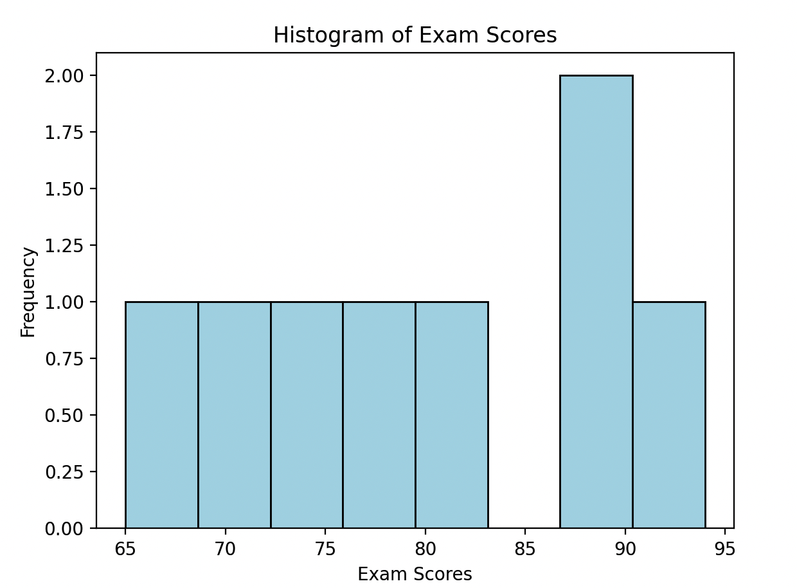
遇到 NaN 时可使用 np.nanmean、np.nanmedian、np.nanstd 等忽略缺失值的版本，但要先解释缺失机制；“忽略”不等于“问题已解决”。
四、多元数据：协方差、相关系数与 PCA
协方差反映两个变量共同变化的方向，但数值受量纲影响；Pearson 相关系数把协方差标准化到 $[-1,1]$，便于比较线性关系。接近 0 只表示“线性关系弱”，不代表不存在非线性关系。
import pandas as pd from sklearn.decomposition import PCA from sklearn.preprocessing import StandardScaler df = pd.DataFrame({ "math": [82, 90, 75, 88, 95, 70], "english": [78, 92, 72, 85, 91, 68], "physics": [80, 94, 70, 86, 96, 65], }) cov_matrix = df.cov() # 样本协方差，默认 ddof=1 corr_matrix = df.corr() # Pearson 相关矩阵 X = StandardScaler().fit_transform(df) pca = PCA(n_components=2, random_state=0) scores_2d = pca.fit_transform(X) explained = pca.explained_variance_ratio_
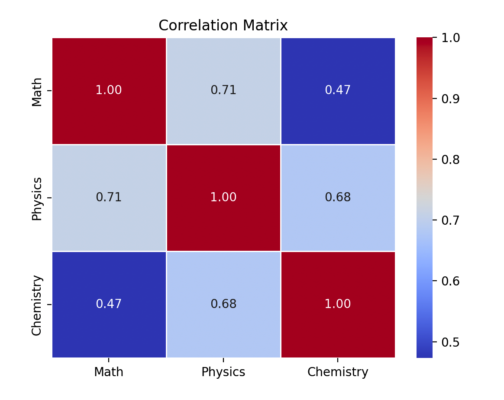
PCA 会寻找方差最大的正交方向以降维；各特征量纲不一致时通常先标准化。PCA 是无监督的线性变换，主成分不一定具有直接业务含义。
五、时间序列与技术指标
1. SMA 与 EMA
简单移动平均（SMA）对窗口内观测给予相同权重，能平滑短期波动但存在滞后；指数移动平均（EMA）让近期数据权重更高，响应更快，也更容易受短期噪声影响。
import pandas as pd close = pd.Series([100, 102, 101, 105, 107, 106, 110, 111]) sma3 = close.rolling(window=3, min_periods=3).mean() ema3 = close.ewm(span=3, adjust=False).mean() # 纯 NumPy 的 valid 口径：前 window-1 个位置没有结果 sma3_np = np.convolve(close.to_numpy(), np.ones(3) / 3, mode="valid")
2. ATR：波动强度，不是方向信号
真实波幅 $TR$ 取以下三者最大值：当日高低差、当日最高价与前收盘价之差的绝对值、当日最低价与前收盘价之差的绝对值。ATR 是 TR 的滚动平均，衡量波动性，不直接判断涨跌方向。
ohlc = pd.DataFrame({ "High": [120, 125, 130, 128, 134], "Low": [115, 120, 125, 126, 129], "Close": [118, 124, 128, 127, 133], }) previous_close = ohlc["Close"].shift(1) tr = pd.concat([ ohlc["High"] - ohlc["Low"], (ohlc["High"] - previous_close).abs(), (ohlc["Low"] - previous_close).abs(), ], axis=1).max(axis=1) ohlc["ATR_3"] = tr.rolling(3).mean()
3. 布林带
布林带通常由窗口均线和其上下若干倍标准差组成。带宽收窄表示近期波动降低，带宽扩张表示波动增加；价格接近上/下轨不能单独作为交易结论。
window = 5 middle = close.rolling(window).mean() rolling_std = close.rolling(window).std(ddof=1) upper = middle + 2 * rolling_std lower = middle - 2 * rolling_std
4. 趋势线与线性模型
np.polyfit(x, y, 1) 用最小二乘拟合一次多项式，返回斜率和截距；np.poly1d 可把系数包装成可调用多项式。趋势线依赖模型假设和所选时间区间，外推尤其需要谨慎。
import numpy as np x = np.arange(1, 11) y = np.array([2, 3, 4, 5, 5, 6, 7, 8, 9, 10]) slope, intercept = np.polyfit(x, y, deg=1) trend = slope * x + intercept
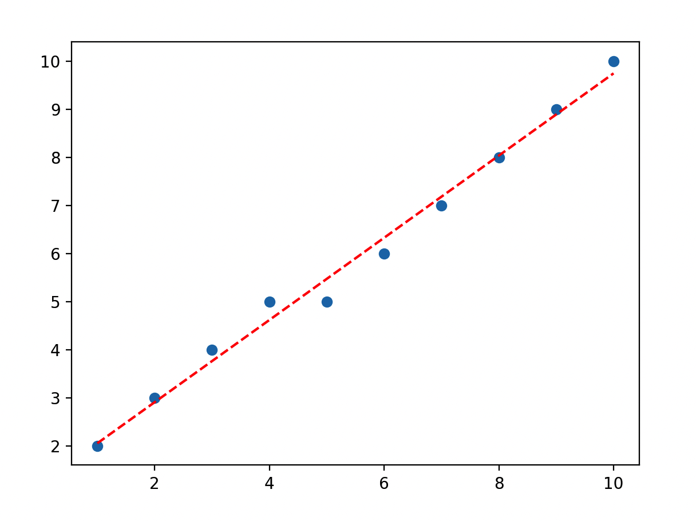
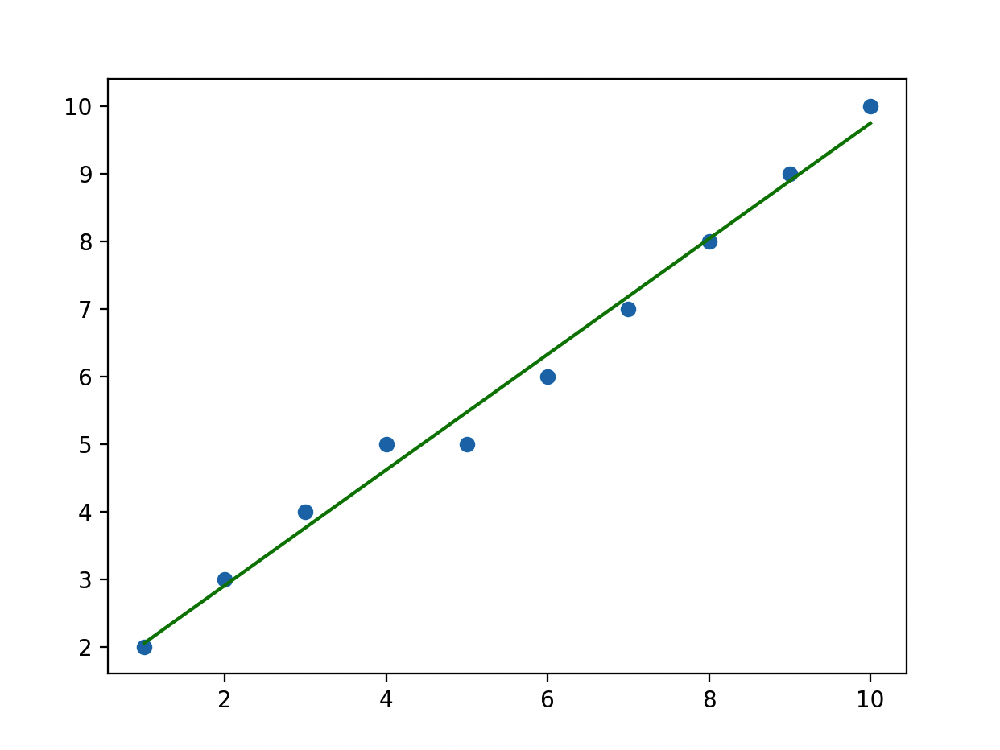
六、排序、集合逻辑与线性代数
1. 排序与集合逻辑
a = np.array([3, 1, 4, 1, 5, 9]) b = np.array([1, 2, 3, 5, 8]) np.sort(a) # 返回排序副本 order = np.argsort(a) # 返回排序后的原位置 np.unique(a, return_counts=True) # 唯一值及频数 np.intersect1d(a, b) # 交集 np.union1d(a, b) # 并集 np.setdiff1d(a, b) # a - b np.setxor1d(a, b) # 对称差 np.isin(a, b) # a 的每个元素是否出现在 b 中
NumPy 的一维集合函数默认去重并排序；若要保留原顺序或处理整行唯一值，需要结合 return_index=True 或 axis 参数。
2. 线性代数
矩阵乘法要求前一个矩阵的最后一维与后一个矩阵的倒数第二维一致。求解 $Ax=b$ 时优先 solve，不应先显式求逆再相乘；奇异矩阵没有普通逆矩阵。
A = np.array([[3.0, 1.0], [1.0, 2.0]]) b = np.array([9.0, 8.0]) x = np.linalg.solve(A, b) A @ x # 验证是否接近 b np.linalg.det(A) # 行列式 np.linalg.matrix_rank(A) # 秩 np.linalg.norm(A) # Frobenius 范数 eigenvalues, eigenvectors = np.linalg.eig(A) u = np.array([1, 2, 3]) v = np.array([4, 5, 6]) np.dot(u, v) # 内积，标量 32 np.outer(u, v) # 外积，3×3 矩阵 np.cross(u, v) # 三维向量叉积
七、随机数与模拟
随机数生成器产生的是可复现的伪随机序列。推荐创建独立的 Generator，避免全局随机状态互相干扰：
rng = np.random.default_rng(42) rng.random(5) # [0, 1) 均匀分布 rng.integers(0, 10, size=(2, 4)) # 随机整数 rng.normal(loc=0, scale=1, size=1000) # 正态分布 rng.choice(["A", "B", "C"], size=8, p=[0.2, 0.5, 0.3]) rng.permutation(10) # 随机排列
1. 单条与多条随机漫步
随机漫步的每一步随机取 $-1$ 或 $+1$，位置是步长的累计和。把“模拟编号”和“时间步”放在两个轴上，就能一次向量化生成多条路径。
rng = np.random.default_rng(0) steps = rng.choice([-1, 1], size=1000) path = steps.cumsum() many_steps = rng.choice([-1, 1], size=(5, 1000)) many_paths = many_steps.cumsum(axis=1)
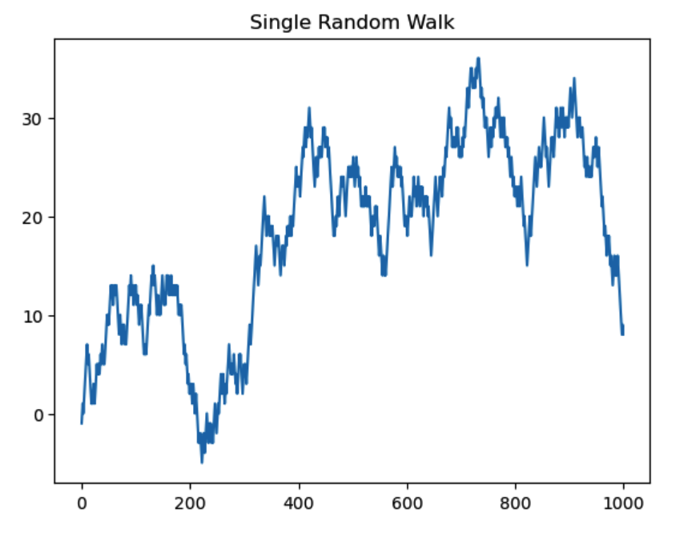
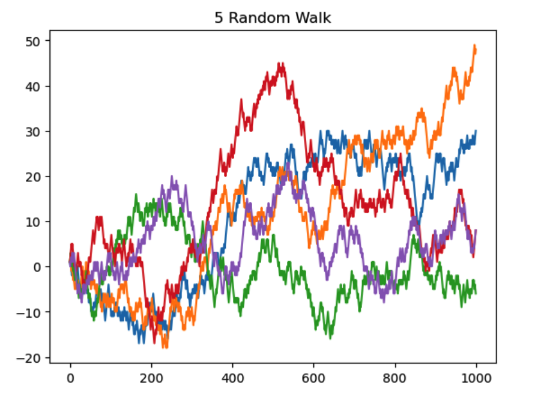
2. 股价路径模拟
若把每日收益率记为 $r_t$，价格路径可写成 $P_t=P_0\prod_{i=1}^{t}(1+r_i)$。这只是帮助理解不确定性的模拟，不代表真实市场模型或投资建议。
n_days = 100 n_simulations = 5 initial_price = 100 returns = rng.uniform(-0.02, 0.02, size=(n_simulations, n_days)) price_paths = initial_price * np.cumprod(1 + returns, axis=1)
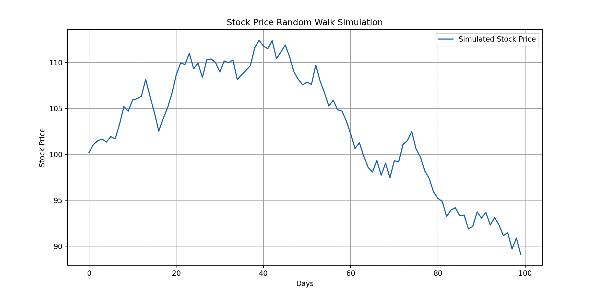
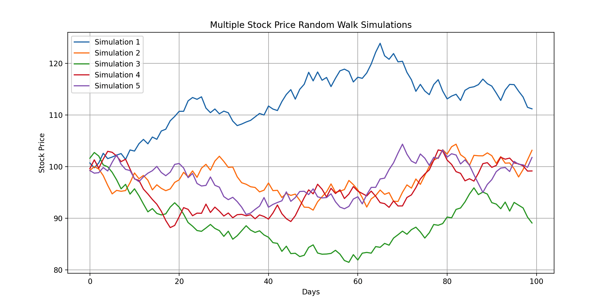
八、气象数据综合分析
一轮可靠的分析通常按“读取 → 质量检查 → 清洗 → 描述 → 时序聚合 → 关系分析 → 建模评估”推进：
import pandas as pd weather = pd.read_csv("weather_data.csv", parse_dates=["Date"]) # 先检查，再决定处理方式 quality = weather.isna().sum() weather = weather.drop_duplicates().sort_values("Date") weather[["Temperature", "Rainfall"]] = weather[ ["Temperature", "Rainfall"] ].interpolate(limit_direction="both") # 业务阈值应有依据，不能照抄示例 weather = weather[weather["Temperature"].between(-50, 60)] weather = weather.set_index("Date") monthly = weather[["Temperature", "Rainfall"]].resample("ME").mean() corr = weather[["Temperature", "Rainfall"]].corr()
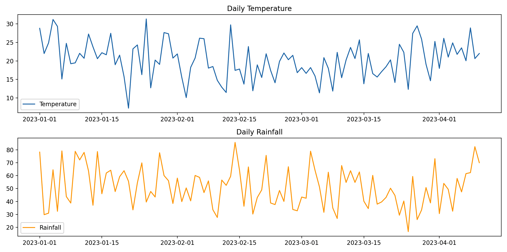
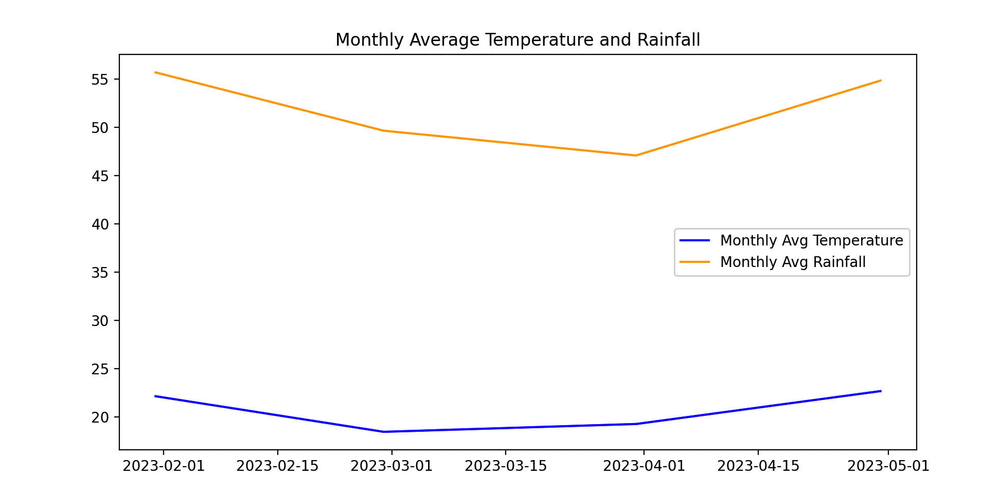
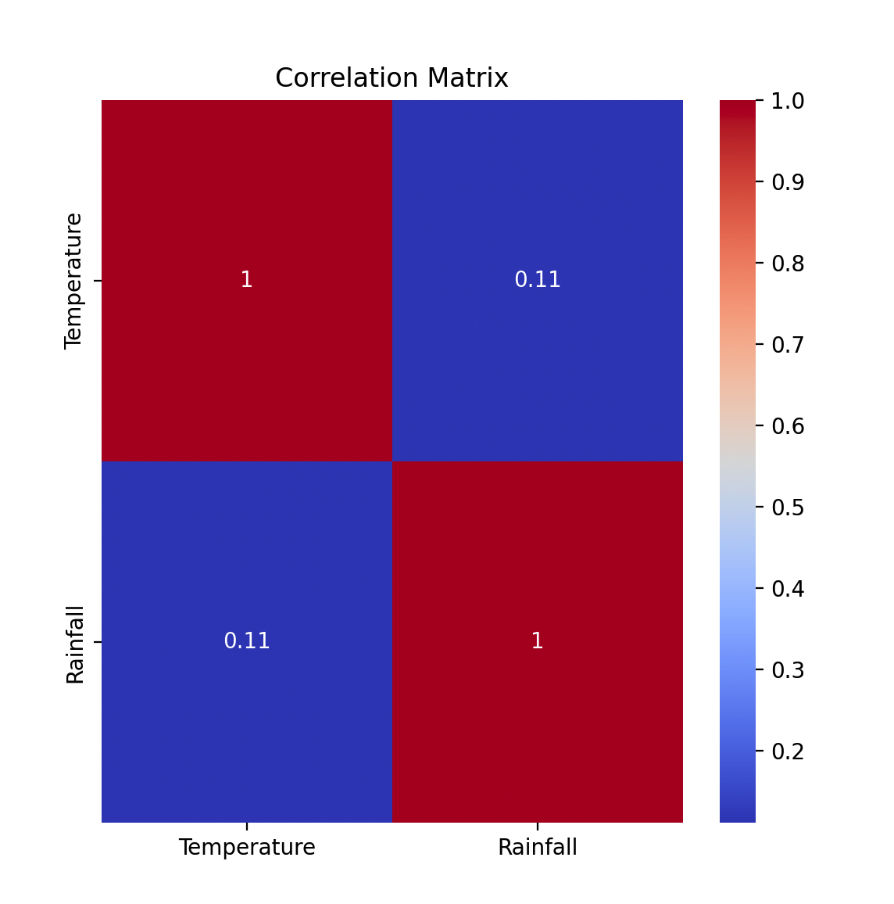
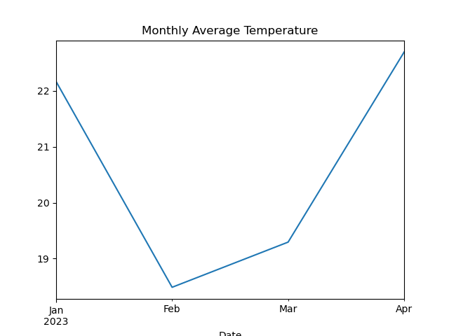
若用日期序号预测气温，需按时间先后划分训练集和测试集，不能随机打乱造成“未来信息泄漏”；均方误差要与基准模型和业务容忍度对比，单独一个数值无法说明模型是否可用。
九、假设检验：从问题到决定
1. 六步工作流
- 明确总体、抽样方式和要检验的参数；
- 写出零假设 $H_0$ 与备择假设 $H_1$；
- 在看结果前设定显著性水平 $\alpha$，并决定单侧或双侧检验；
- 检查独立性、分布、方差等适用条件，选择 Z、t、卡方或非参数检验；
- 计算检验统计量、P 值和效应量，最好同时报告置信区间；
- 若 $p<\alpha$，拒绝 $H_0$；否则只能说“未能拒绝”，不能说“证明 $H_0$ 正确”。
P 值是在 $H_0$ 成立的前提下，观察到当前或更极端数据的概率；它不是“$H_0$ 为真的概率”，也不表示实际差异有多大。
2. 比例的 Z 检验
比较两个大样本转化率时，可在 $H_0:p_1=p_2$ 下使用合并比例计算标准误：
$$ z=\frac{\hat p_1-\hat p_2}{\sqrt{\hat p(1-\hat p)(1/n_1+1/n_2)}} $$
from scipy import stats converted_old, n_old = 120, 1000 converted_new, n_new = 150, 1000 p_old = converted_old / n_old p_new = converted_new / n_new p_pool = (converted_old + converted_new) / (n_old + n_new) se = np.sqrt(p_pool * (1 - p_pool) * (1 / n_old + 1 / n_new)) z = (p_new - p_old) / se p_value = 2 * stats.norm.sf(abs(z))
3. 两独立样本均值的 t 检验
小样本且总体方差未知时常用 t 检验。Welch t 检验不要求两组方差相等，是稳妥的默认选择；若是同一对象前后测量，应改用配对检验。
strategy_a = np.array([0.08, 0.09, 0.07, 0.10, 0.11, 0.09, 0.08, 0.10]) strategy_b = np.array([0.12, 0.14, 0.10, 0.13, 0.15, 0.11, 0.13, 0.12]) result = stats.ttest_ind(strategy_a, strategy_b, equal_var=False) alpha = 0.05 decision = "拒绝 H0" if result.pvalue < alpha else "未能拒绝 H0" # 除显著性外，报告差异大小 mean_difference = strategy_b.mean() - strategy_a.mean()
单侧检验只在方向性假设事先明确时使用，不能看到数据后再从双侧改成单侧。拒绝域是检验统计量在 $H_0$ 下足够极端的区域；双侧检验把 $\alpha$ 分配到分布两端。
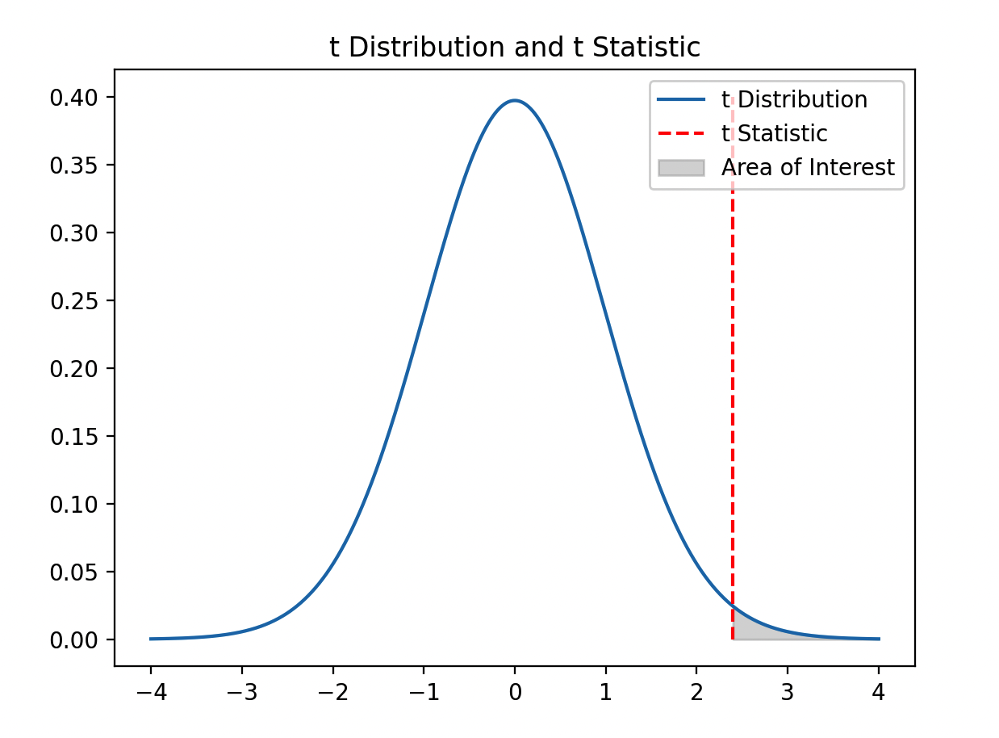
4. 第一类错误、第二类错误与功效
| 真实情况 / 决策 | 拒绝 $H_0$ | 未拒绝 $H_0$ |
|---|---|---|
| $H_0$ 为真 | 第一类错误，概率上限由 $\alpha$ 控制 | 正确 |
| $H_0$ 为假 | 正确，概率为功效 $1-\beta$ | 第二类错误，概率为 $\beta$ |
降低 $\alpha$ 会减少假阳性，但在样本量不变时往往增加假阴性。提升功效通常依靠更大样本、更低噪声、更强效应或更合适的设计。检验前做功效分析、检验后报告效应量与置信区间，比只盯着 p < 0.05 更完整。
十、本讲小结
| 主题 | 必须掌握 |
|---|---|
| 向量化 | ufunc、axis、keepdims、where/select、布尔条件与内存权衡 |
| 描述统计 | 均值/中位数/众数、总体与样本方差、分位数、偏度、两种峰度口径 |
| 多元数据 | 协方差受量纲影响；相关只度量关联；PCA 前通常先标准化 |
| 时序分析 | SMA/EMA、ATR、布林带、趋势线的含义与局限 |
| 数学工具 | 排序与集合函数、矩阵乘法、solve、特征分解与范数 |
| 随机模拟 | Generator、随机种子、cumsum/cumprod、多路径向量化 |
| 假设检验 | H0/H1、alpha、P 值、单/双侧、拒绝域、I/II 类错误、功效 |
把整讲串成一句话：先检查数据，用统计量和图表描述样本，再在明确假设与错误代价的前提下做推断，最后把效应大小、不确定性和业务语境一起写进结论。